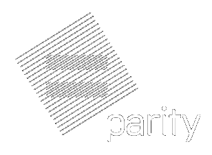

class: center, middle # Rust libp2p state of the implementation https://github.com/libp2p/rust-libp2p --- # Why the Rust programming language? - Efficient but readable. - Strict types and strict ownership system. - Precise control over resources and resource use. - Can write bindings into Rust from other languages. # Characteristics of rust-libp2p - Based on the `futures` and `tokio` libraries for zero-cost user-space cooperative multitasking. - Can compile to asm.js and run in the browser. - API was designed to have the fewer runtime overhead possible, and is thus different than the JavaScript and Go equivalents. - On the protocol level, should be compatible with the JS and Go implementations (modulo bugs or misunderstandings in the protocol). --- # Usage at Parity Technologies ## Parity *Parity is a client for the Ethereum blockchain.* - Support for libp2p (in parallel to the current layer) currently being added in parallel. - Medium-term objective is to run Parity in a browser, which becomes possible with libp2p-websocket. - In the long term future, the Ethereum community may decide to make the switch to libp2p. ## Polkadot *Polkadot is a next generation blockchain to be launched in 2019.* - Will be the primary networking layer of Polkadot. <div style="position: absolute; bottom: 5%; left: 5%;"> .left[ ] </div> <div style="position: absolute; bottom: 5%; right: 5%;"> .right[  ] </div> --- # State of the "standard" protocols Transports: - tcp ☑ - websockets ☑ - dns ☑ Middlewares: - multistream-select ☑ - secio ☑ (only supports RSA with 2048bits+ keys) - plaintext ☑ - mplex ☑ Protocols: - floodsub: partial (no record signing) - identify ☑ - kad: partial (not record store) - ping ☑ - p2p-circuit: being implemented --- class: center, middle # Demo time